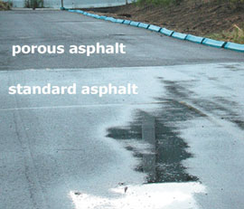
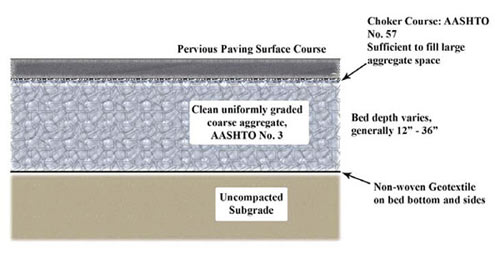

Porous Pavement
Watch West Contracting install porous pavement.
Seeing is believing. See a demonstration of how porous pavement reduces runoff and conserves water.
Porous Pavements Preserve Water Quality

Porous pavements have been used successfully throughout the United States for more than 30 years in every type of climate and geography. They are recognized by the EPA as a best management practice for storm water management. Porous pavements have an open-graded surface over an underlying clean open graded rock base. During rain and snowmelt, water drains through the porous asphalt pavement, into the rock base, and then infiltrates into the soil where the natural processes that cleanse water can begin. During this natural filtration process, porous pavements help conserve water, reduce runoff and protect area streams.
Porous pavements also allow new land development plans to be more environmentally friendly. Several traditional aspects of a construction site are no longer necessary. Storm drains and concrete curb and gutter systems leading water to the storm drainage system are now unnecessary. Additional excavation and earth moving may not be needed in flat areas where a parking lot or roadway is being built to create adequate slope for drainage. Porous pavements can be built on flat surfaces! Cutting down trees and clearing areas for detention and retention ponds are also no longer needed. Excavation costs and finding a place to dispose of excess dirt from the creation of a detention pond is also now not necessary with porous asphalt pavement.
You can also find out more about the industry’s efforts by reading NAPA’s Sustainability Report – Black and Green: Sustainable Asphalt, Now & Tomorrow
NAPA also provides an excellent overview on the Benefits of Asphalt as well as additional information on Porous Asphalt under its "Environment, Health And Safety" Section.
Did you know . . .
- Porous pavement is an environmentally friendly tool for storm water management!
- Unlike conventional surfaces, porous pavements no longer seal the surface and promote natural filtration of water the way nature intended.
- Porous pavements conserve water, reduce runoff, promote infiltration that cleanses storm water naturally, and replenishes underground aquifers.
- Porous pavements protect our streams and rivers by minimizing tree clearing and erosion.
- Porous pavements also allow natural filtration of water through the ground back into our streams and rivers.
- Open graded surfaces can be built in areas with little to no drainage slopes. This often saves money on mass excavation and earth moving.
- Ponding of water in flat areas will no longer occur on parking lots and roadways with porous pavement as the water filtrates back into the ground.